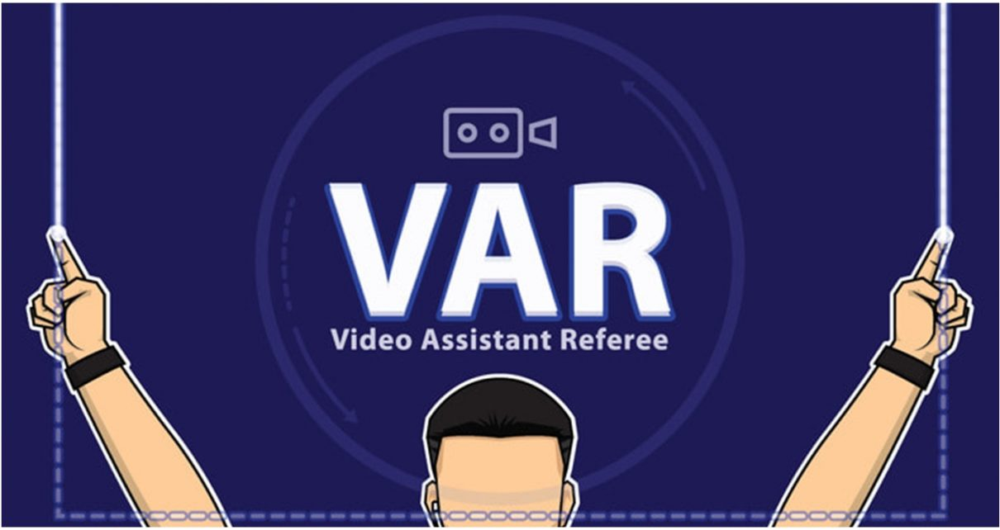
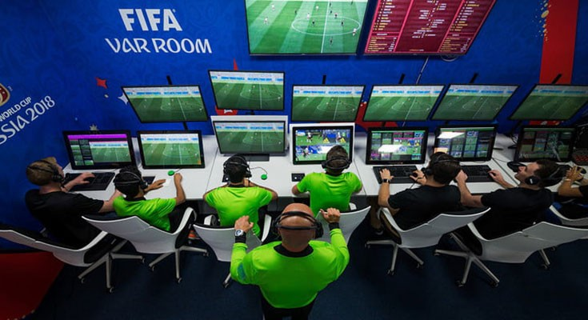
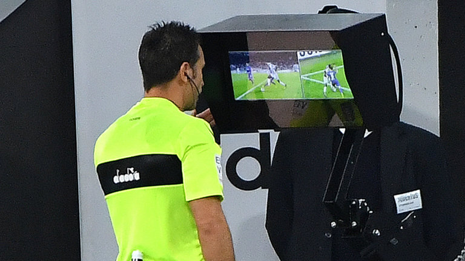

VAR
Video assistant referee, skraćeno VAR, je tehnologija koja je uvedena u nogomet pomoću koje suci mogu preispitati svoje odluke putem kamera. Može se koristiti za provjeru slijedećih situacija:
-pogodak/nema pogotka
-kazneni udarac/nema kaznenog udarca
-izravni crveni karton (ne drugi žuti karton/druga opomena)
-pogrešni karton (žuti ili crveni karton)
VAR tehnologija wikipedija

Utakmicama u kojima se koristi video tehnologija, uz sudački tim na terenu, utakmicu nadziru VAR sudac i najmanje jedan VAR pomoćni sudac, koji imaju komunikaciju s glavnim sucem te ga usmjeravaju ukoliko je potrebno prekinuti igru ili pričekati s nastavkom igre. Uz igralište postavljen je ekran na kojem sudac može pogledati spornu situaciju i donijeti odluku. Glavni sudac je taj koji donosi konačnu odluku. Konačnu odluku moguće donijeti i bez sučevog gledanja snimke na terenu, na sugestiju VAR suca (najčešće kod zaleđa).
Na utakmicama na kojima se koristi Video assistant referee tehnologija, organizator mora osigurati reportažno vozilo i posebnu prostoriju u kojoj će biti smješteni VAR suci i sustav za pregledavanje snimki.

Ova tehnologija počela se razvijati 2010. godine u Nizozemskoj gdje je i testirana u sezoni 2013.-2014., a do sada je korištena u Australiji, na Svjetskom klupskom prvenstvu te nekim utakmicama njemačke Bundeslige i talijanske Serie A, dok je globalnu premjeru doživjela na FIFA svjetskom prvenstvu u Rusiji 2018. godine. Početkom 2020. godine započela je primjenu i u Hrvatski telekom Prvoj ligi (1. HNL).
Primjenom VAR tehnologije na FIFA svjetskom prvenstvu u Rusiji dosuđeno je najviše kaznenih udaraca u povijesti, njih čak 28. Za usporedbu, na prošlom SP-u u Brazilu dosuđeno ih je 13, a na SP-u u Japanu i Južnoj Koreji 18. Kada su u pitanju izravna isključenja, na SP-u u Rusiji ih je bilo tek 4, dok ih je u Njemačkoj 2006. bilo čak 28.
